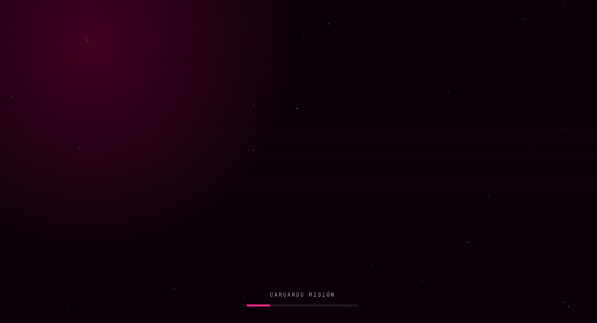

Creación Digital · Universidad El Bosque
Misión Representante
Una elección estudiantil convertida en misión: postulación, perfiles de candidatos, votación y publicación de resultados.
- Next.js 16
- TypeScript
- Tailwind CSS 4
- Firebase
Análisis técnico
Firebase Authentication verifica la identidad institucional; Firestore actualiza fases, candidaturas y votos en tiempo real, y Firebase Storage gestiona los medios. Motion anima las transiciones. Las reglas de Firestore protegen la votación y evitan el voto duplicado.